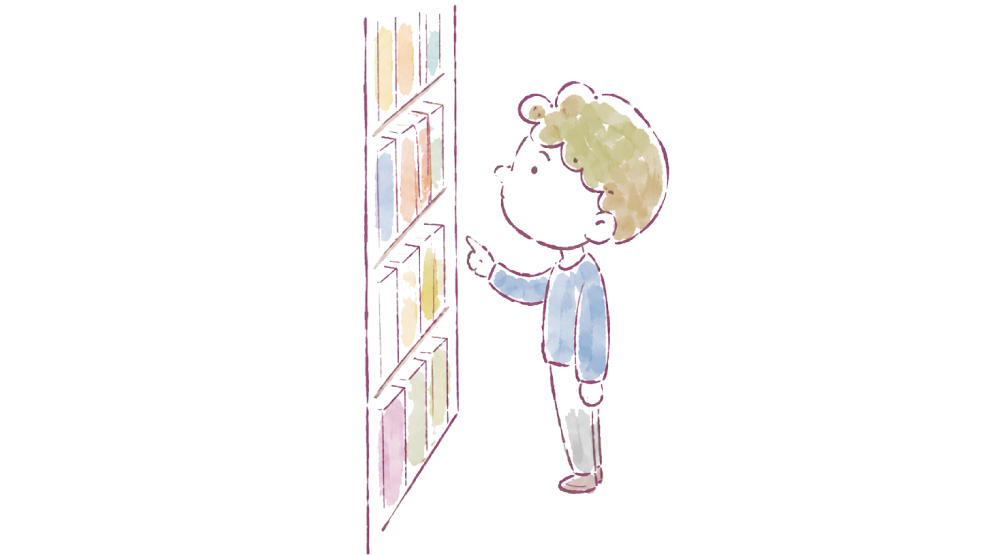
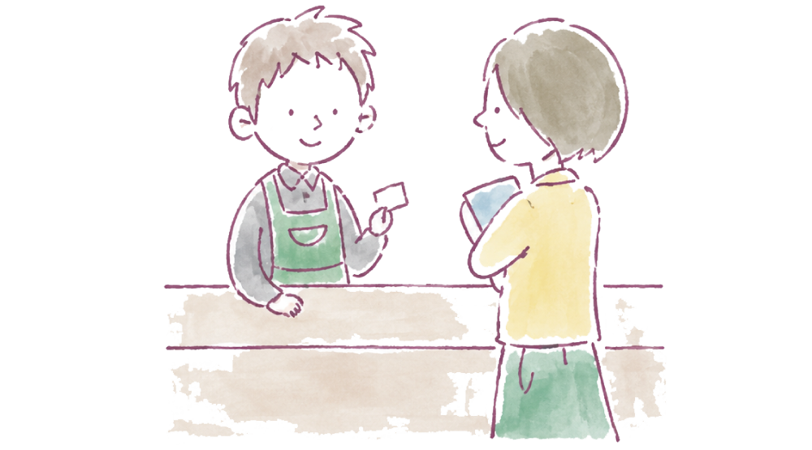
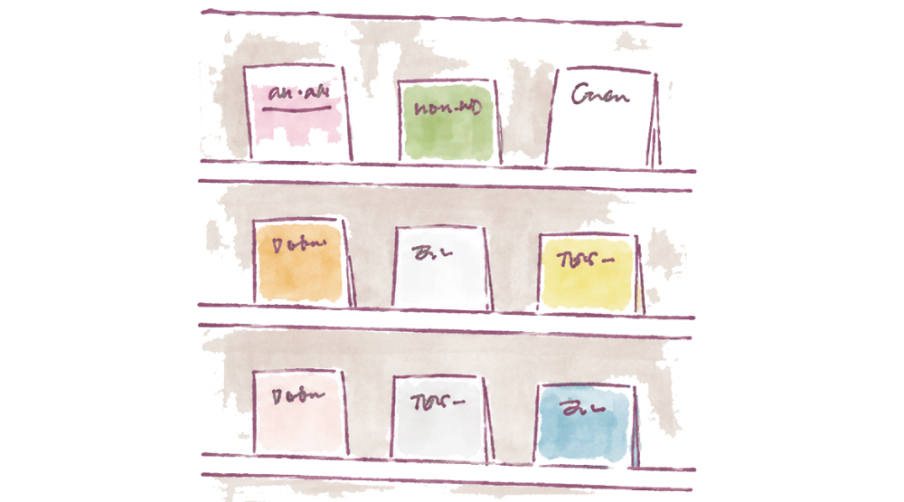

図書館をもっと身近に楽しむための情報サイト
キーワードで探す
本のタイトルや著者名、興味のある言葉を入力して探せます。
読みたい本が決まっているときや、特定のテーマについて調べたいときに便利です。

分類から探す
本は内容ごとに分類番号で整理されているので、好きな分野の番号を大まかに覚えておくと探しやすいです。
例えば900番台は文学、700番台は芸術です。

司書に相談する
どんな本を読めばよいか迷ったときは、司書に相談してみましょう。
調べものの方法や、おすすめの資料についてアドバイスを受けることができます。

おすすめ・特集から探す
図書館では季節やテーマごとの特集コーナーが設けられています。
話題の本や新しいジャンルとの出会いのきっかけになります。